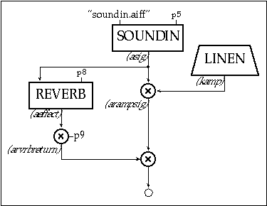

Now instead of continuing to enhance the same instrument, we will design a totally different one. In it we'll read a soundfile into the orchestra, apply an amplitude envelope to it, and add some reverb. To do this we will employ Csound's soundin and reverb generators. The first is described as:
a1 soundin ifilcod[, iskiptime[, iformat]]
soundin derives its signal from a pre-existing file. ifilcod is either the filename in double quotes, or an integer suffix (.n) to the name "soundin". Thus the file soundin.5 could be referenced either by the quoted name or by the integer 5. To read from 500ms into this file we might say:
a1 soundin "soundin.5", .5
The Csound reverb generator is actually composed of four parallel comb filters plus two allpass filters in series. Although we could design a variant of our own using these same primitives, the preset reverb is convenient, and simulates a natural room response via internal parameter values. Only two arguments are required the input (asig) and the reverb time (krvt)
ar reverb asig, krvt
The soundfile instrument with artificial envelope and a reverb (included directly) is as follows:
instr 8
; toot8.orc
idur
=
p3
iamp
=
p4
iskiptime
=
p5
iattack
=
p6
irelease
=
p7
irvbtime
=
p8
irvbgain
=
p9
kamp
linen
iamp, iattack, idur, irelease
asig
soundin
"soundin.aiff", iskiptime
arampsig
=
kamp * asig
aeffect
reverb
asig, irvbtime
arvbreturn
=
aeffect * irvbgain
out
arampsig +
arvbreturn
endin
;toot8.sco
;ins
strt
dur
amp
skip
atk
re
rvbtime
rvbgain
i8
0
1
.3
0
.03
.1
1.5
.2
i8
2
1
.3
0
.1
.1
1.3
.2
i8
3.5
2.25
.3
0
.5
.1
2.1
.2
i8
4.5
2.25
.3
0
.01
.1
1.1
.2
i8
5
2.25
.3
.1
.01
.1
1.1
.1
e

Toot 8: soundin